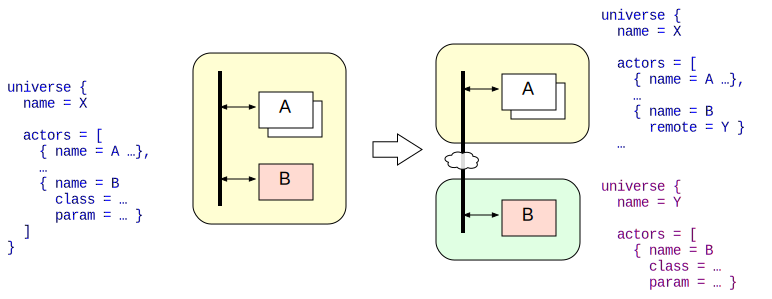

Remote RaceActors and Distributed RACE Applications
RACE is meant to be used in a distributed environment, communicating with other nodes across network connections. This communication can happen at three levels:
- transparently through Akka Clusters
- transparently between RaceActors in different processes
- at the application level with dedicated actors that directly encode protocols/formats
Tightly related to the first two modes is the concept of Location Transparency. In theory this means the code of an actor should not reflect in which actor system it is running - the location can be chosen based on resource availability, including load distribution. In practice, this is constrained by the cost of serialization for incoming and outgoing messages for respective actors, which for high volume communication can exceed potential gains.
Akka Clusters
This is the lowest level of remoting support and - apart from serialization of exchanged messages - only requires cluster configuration as it is fully implemented in the Akka framework. Clusters can be used to implement highly reliable systems with distributed data but due to underlying protocols require a high level of connectivity between the nodes within the cluster. There is not yet specific support for Akka clusters within RACE.
Remote RaceActors
This is the primary remoting support within RACE, which is integrated into the RaceActor Model. If the MasterActor
during system initialization encounters an actor configuration with a remote option it does not instantiate this
actor locally but - depending on if the there is a class specification for this actor - tries to either start
or lookup this actor in a remote RaceActorSystem:
- remote lookup - if there is no
classspecification theMasterActorassumes the remote actor is already running within the remote system, tries to obtain itsActorRefand if successful sends its local actor configuration - remote start - if there is a
classspecification in the local config theMasterActorinstantiates the respective actor in the remote system, which already needs to be running. Note this mode is only supported in Akka Classic (which is still the basis for RACE) and therefore might be dropped in the future
Location Transparency is guaranteed in both cases. Sending messages to remote actors is handled transparently by
Akka. Publishing to global RACE channels from remote actors requires a local BusConnector which is created
automatically by the MasterActor and acts as a local proxy that manages channel subscription and publication in lieu
of the remote. Location transparency therefore becomes just a matter of RACE configuration:

Dedicated Communication Actors
This mode does not strive for location transparency - it uses dedicated communication actors that have full control
over network protocols and endpoint lookup. SHARE is an example of choosing specialized actors (UpstreamConnectorActor
talking to a HttpServer/NodeServerRoute) in order to enable connectivity-based actor modes (e.g. implementing
mode specific protocols) and to allow for alternative (non-RACE) implementations of end points.
Serialization
Regardless of the remoting level, communication between RaceActors in different processes always involves serialization and de-serialization of exchanged messages. While older RACE versions used generic Java Serialization that did not require to identify which message types need to be serialized/deserialized this is now discouraged by Akka for security reasons (see Java Security Guidelines and Perils of Java Deserialization).
For clusters and remote RaceActors RACE now defaults to a simple java.io.DataOutputStream and DataInputStream
based approach that requires RACE configuration in order to whitelist serializable types and associate them with
respective gov.nasa.race.core.AkkaSerializers that provide implementations for two basic methods:
def toBinary(o: AnyRef): Array[Byte]
def fromBinary(bytes: Array[Byte], manifest: Option[Class[_]]): AnyRefSerializers for standard RACE system messages can be found in gov.nasa.race.core.RaceSerializers and are generally
type specific, i.e. they only handle a single type which is uniquely identified in the receiving RACE system
by means of its Akka serializer id (that is transparently sent by Akka).